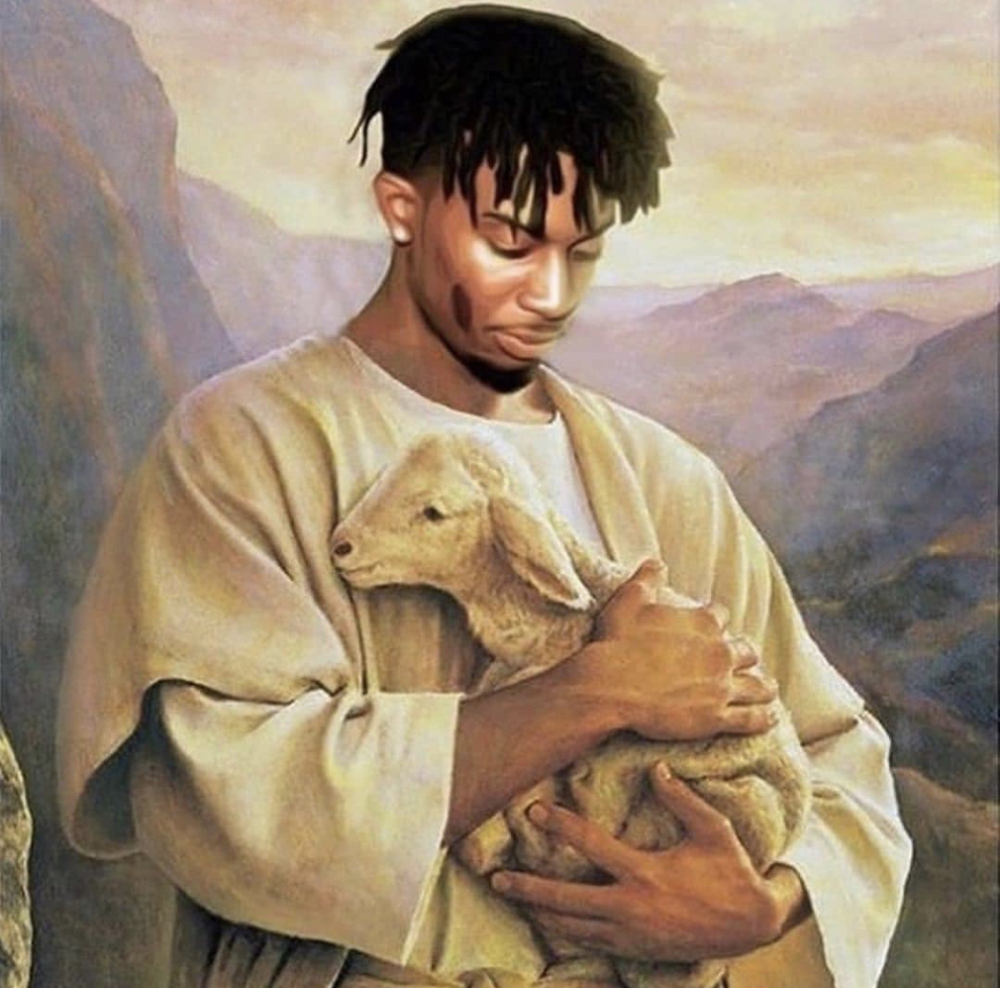

My Art Collage
Maxime's Mind
Description
⚠WARNING⚠
‡‡‡‡‡ANY1 WHO IS ABOUT TO SCROLL FURTHER DOWN, IS SET ON HIS OWN RESPONSIBILITIES‡‡‡‡‡
THIS IS A COMPOSITION OF MY DIGITAL AND PHYSICAL ART PIECES. WITH THESE PICTURES YOU WILL HOPEFULLY BE ABLE TO UNDERSTADND WHAT INTO WHAT DIMENSION
MY MIND IS SET, (when im not thinking about Biology) in my spare time. THIS COLLECTION CONTAINS A MY DIFFERENT DRAWINGS, EDITS & DESIGNS OF THE LAST
TWO YEARS OF MY LIFE.
ENJOY MR. BENKLER
Drawings/Paintings
 covered Nature
covered Nature
 I see both sides like chanel
tokyo be drifting my mind
I see both sides like chanel
tokyo be drifting my mind
 'Eternal Atake' is overrated
dirty red Supreme
Moskow in a picture
it's just me myself and I
'Eternal Atake' is overrated
dirty red Supreme
Moskow in a picture
it's just me myself and I
Digitals

Two goats in one picture
 new phone who dis?
new phone who dis?
 pennywise without makeup
the general image that arabs get from the big great Western culture.
can we call that a culture that doesn't have ancient
there always two sides in one story
pennywise without makeup
the general image that arabs get from the big great Western culture.
can we call that a culture that doesn't have ancient
there always two sides in one story
 the unheard youth
the unheard youth
Photography
 rage can cause a lot.
rage can cause a lot.
 what is the focus, the scissors, me, the stairs or the finger print.
tell me what the focus should be.
what is the focus, the scissors, me, the stairs or the finger print.
tell me what the focus should be.
 money doesn't mean security.
money doesn't mean security.
 a change from looking at it from the mirror.
a change from looking at it from the mirror.
 Los Angeles fires from obove the the clouds.
Los Angeles fires from obove the the clouds.
 a small light with a big meaning.
a small light with a big meaning.
 blue gives me for some odd reason a relaxing vibe.
blue gives me for some odd reason a relaxing vibe.
Self-Portaits
 bring it back to cam'ron's dayzzz
white ferrari - Frank Ocean
bring it back to cam'ron's dayzzz
white ferrari - Frank Ocean
 i think the skatepark isn't the right place to learn how to bend it like Beckham.
i think the skatepark isn't the right place to learn how to bend it like Beckham.
 i made it look empty, even though it wasn't
i made it look empty, even though it wasn't
 same, just in a different mood.
same, just in a different mood.
 not gonna lie desiigner was overdoing it with the ice.
not gonna lie desiigner was overdoing it with the ice.